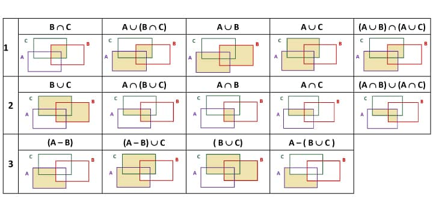
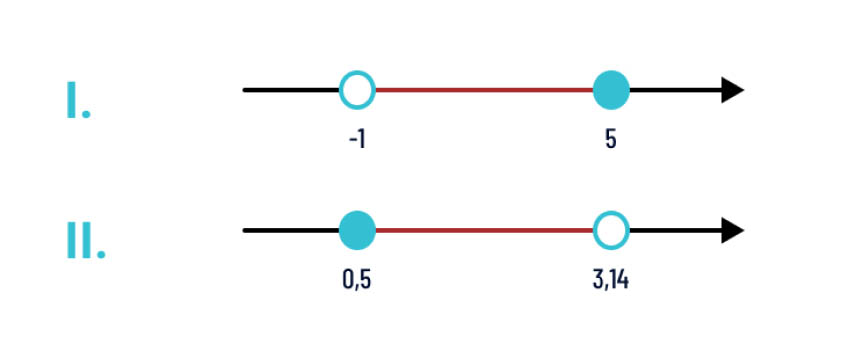
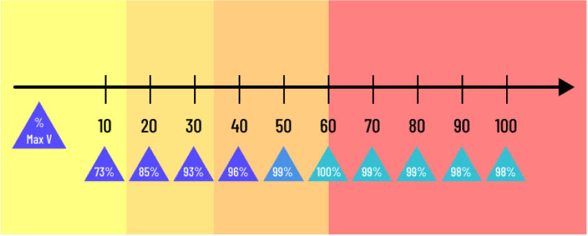
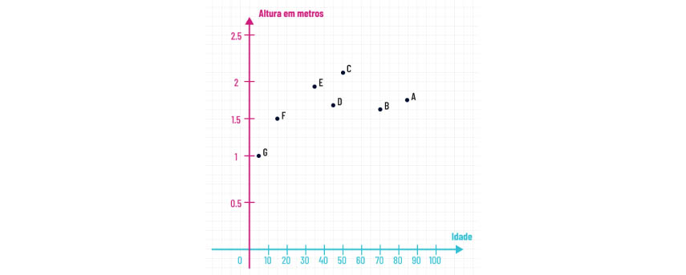
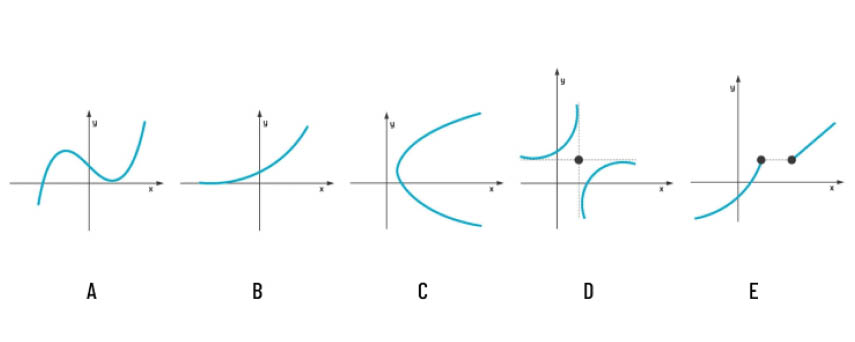
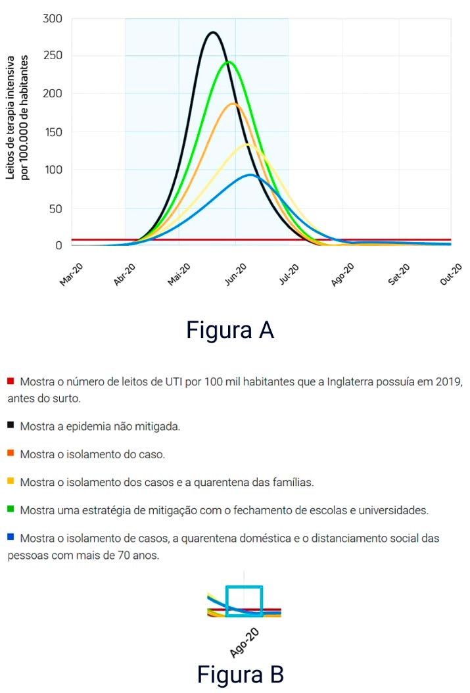
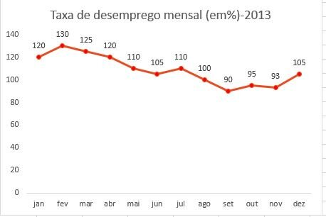
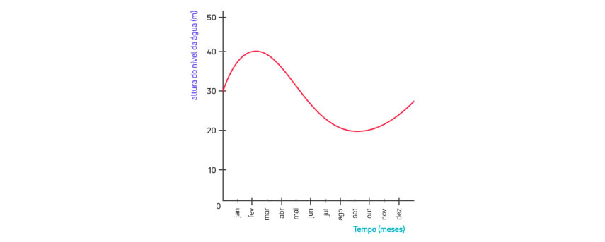
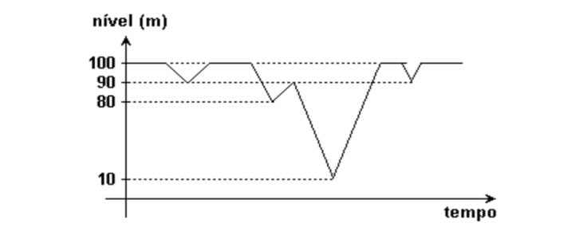

Exercícios
1. Se Q designa o conjunto dos números racionais e A = { 1; 3; -4; 2/3; 0,111...; π(pi) }, podemos afirmar que A ∩ Q é igual a:
Assinale a opção que corresponde à representação explícita dos conjuntos:
A ={x ∈ Z | x² ≤ 1} e {x ∈ R | x² < 4}
Considere as seguintes igualdades, em que A, B e C são conjuntos arbitrários:
A ∪ (B ∩ C) = (A ∪ B) ∩ (A ∪ C)
A ∩ (B ∪ C) = (A ∩ B) ∪ (A ∩ C)
(A − B) ∪ C = A − (B ∩ C)
Das afirmativas realizadas acima estão corretas:

Considerando os conjuntos X = {x ∈ Z | 2x − 4 > 3} e Y = {x ∈ Z | 3x − 5 > 11}, podemos afirmar que X ∩ Y vale:
Considere o conjunto A = {x ∈ R| −4 < x < 5}. Então, o conjunto B = {x² | x ∈ X} vale:
A solução da inequação |x − 3| < 5, no universo dos números reais, pode ser expressa pelo intervalo:
Se somarmos todos os números reais do intervalo ] −2; 5 ] com todos os números do intervalo [ 1; 7 [ qual conjunto obtemos?
DADOS OS CONJUNTOS A = { 1, 3, 5 } E B = { 3; 5; 7 } QUANTOS ELEMENTOS POSSUI O CONJUNTO (A − B) ∪ (B − A).
Quantas senhas com algarismos diferentes podem ser formadas com no mínimo 4 e no máximo 6 dígitos, usando os algarismos de 0 a 9?
Dado o conjunto A = { 1, 3, 5; 7; 9 }, quantos são os subconjuntos de A, com 2 elementos, mas que não possuem o número 5?
Em um saco com 50 bolas, 20 são azuis e 30 são verdes. Qual o menor número de bolas que devemos retirar do saco para garantirmos que retiramos pelo menos duas bolas azuis?
Quantos são os anagramas da palavra ALFREDO?
Se as placas de carro de um país são formadas por 2 letras distintas, seguidas de 4 algarismos, também diferentes, quantas são as possíveis placas?
Utilizando os algarismos de 1 a 8, quantos números pares podemos formar de 4 algarismos distintos?
Os artigos em uma loja são codificados da forma que se segue: Três letras maiúsculas diferentes e consecutivas, seguidas de um hífen; mais 6 algarismos quaisquer (de 0 a 6); mais um hífen e, finalmente, mais uma letra qualquer do alfabeto.
Considere, como exemplo, o conjunto de códigos: {AHD-4193678-K, GEQ-093044-Q, AAA-9497-X}.
Qual o número total de produtos que podem ser codificados dessa maneira?
Dado o conjunto A = { a; b; c; d; e; f; g }, quantos são os subconjuntos de A que não possuem os objetos a e b mas necessariamente possuem os objetos f e g?
Quantos são os anagramas da palavra ARRANJO?
Determine de quantas maneiras posso construir senhas de exatamente 4 caracteres, a partir exclusivamente das 26 letras minúsculas, dos 10 algarismos, e dos 3 símbolos especiais @, # e &?
Numa padaria, há 10 tipos de biscoitos doces e 7 tipos de biscoitos salgados. Você deseja comprar 4 pacotes de biscoito doce e 3 pacotes de biscoito salgado. Se você poderá comprar pacotes iguais de biscoitos, de quantas maneiras os 7 pacotes de biscoitos que você pretende comprar podem ser escolhidos?
Desejamos arrumar 5 livros de Probabilidade, 7 livros de Cálculo e 8 de Álgebra linear em uma prateleira de uma estante, de tal forma que livros sobre o mesmo assunto fiquem juntos. Quantas são as formas de arrumá-los?
Vamos retornar à análise de problemas de contagem priorizando a estratégia mais importante, o Princípio da Multiplicação, ao invés dos agrupamentos. “Numa eleição para um clube, um grupo de 20 amigos deseja formar uma chapa para se candidatar, sendo necessário um nome para presidente, outro para vice-presidente e outro para diretor tesoureiro, sendo que tais cargos não podem ser preenchidos pela mesma pessoa. No estatuto do clube há uma restrição quanto à escolha do tesoureiro, que deve ser um contador. Sabendo-se que no grupo de amigos há apenas 4 contadores, quantas chapas diferentes podem ser formadas pelos amigos?
Quantos subconjuntos possui um conjunto com 7 elementos?
Quantos são os anagramas da palavra ANAGRAMA?
Um grupo de 10 crianças forma uma roda para brincar da dança das cadeiras. De quantas maneiras diferentes essas crianças podem formar a roda inicial?
Considere os intervalos a seguir:

Veja, a seguir, o desempenho de um corredor durante uma competição dos 100 metros rasos. A reta em questão mostra a marcação da distância na pista e, a cada 10 metros, é apresentado o desempenho do corredor em comparação à sua velocidade máxima.

A figura abaixo apresenta um gráfico de setores de uma cidade. Esses setores foram divididos de A a H, e de 0 a 3, assim a identificação de um setor pode ser feita da seguinte forma, como exemplo: A0, B3, F2 etc. Considere que todos os setores foram divididos em áreas iguais (considere os retângulos idênticos), e que existe a necessidade de se realizar uma entrega que saia de B0 e chegue em G0. O gráfico abaixo apresentam duas rotas para que seja realizada a entrega.

Após observar essas rotas, analise as afirmativas abaixo:
A rota vermelha é a mais longa
A rota verde é a mais curta
A rota vermelha é a mais adequada
Sabendo que a entrega deve ser feita o mais rápido possível, percorrendo a menor distância permitida, assinale a opção correta, sobre a veracidade das afirmações acima:
No gráfico abaixo é mostrada a relação da altura de 7 indivíduos, com sua idade:

Após observar o gráfico, assinale a opção que apresenta, respectivamente, o indivíduo de maior idade e o indivíduo de maior altura.
Qual das opções a seguir não apresenta um gráfico de função?

Marque a opção correta:
Em 2020, houve uma pandemia global provocada pelo vírus SARS-CoV-2. Tal pandemia trouxe danos incalculáveis às economias globais e provocou milhares de mortes pelo mundo inteiro. O estudo do epidemiologista Neil Ferguson, do Imperial College, apresentou um gráfico mostrando requisitos de leito de cuidados intensivos (UTI) por 100 mil habitantes em diferentes cenários:

Assinale a alternativa correta:
O gráfico abaixo apresenta a taxa de desemprego de 2013.

Em quais meses há o maior índice de desemprego e o menor índice?
O gráfico a seguir mostra o nível de água em um reservatório durante o ano de 2015.
Se os níveis de água no reservatório dependem dos níveis de chuva na região, assinale, respectivamente, os meses do ano em que mais choveu e em que menos choveu no ano de 2015.

(PETROBRAS - 2008) Considere que f é uma função definida do conjunto D em R por: ƒ(x) = x² − 4x + 8. Sendo Im a imagem de f, é correto afirmar que, se:
Considere a função f(x) = 120x ÷ (300−x). Podemos afirmar que o domínio da função f é:
Considere a função bijetora ƒ: [1,+ ∞) → (−∞, 3] definida por ƒ(x) = −x² + 2x + 2 e seja (a, b) o ponto de interseção de ƒ com sua inversa ƒ−1. O valor numérico da expressão a + b é:
Considere a função ƒ:[−1, 2] → R, dada por:

Nestas condições, é correto afirmar que:
(Adaptada de: UFPE - 2017) No gráfico a seguir, temos o nível da água armazenada em uma barragem ao longo de três anos:

De acordo com o gráfico, podemos afirmar que:
Uma função ƒ : R+ → R+ é crescente e satisfaz a seguinte condição: ƒ(3x) = 3ƒ(x), para todo x ∈ R+.
Se ƒ(9) = 27, qual o valor de ƒ(1)?
Sendo ƒ: R → R uma função periódica de período 2, podemos afirmar que:
Considere que a função ƒ : [4, +∞[→ [−3, 7] seja periódica com período 6 e seja estritamente crescente no intervalo [4, 10]. Logo, podemos afirmar que:
Considere a proposição “Nem Carlos é engenheiro nem Paulo é professor”. Marque a alternativa que corresponde à representação simbólica correta dessa proposição.
(Fundação Carlos Chagas - Adaptada) Sabe-se que sentenças são orações com sujeito (o termo a respeito do qual se declara algo) e predicado (o que se declara sobre o sujeito). Na relação a seguir, há expressões e sentenças:
- Três mais sete é igual a dez.
- Pelé é jogador de futebol.
- A idade de Paulo.
- A terça parte de um número.
- O jogador de basquete.
- O triplo de 10 é maior do que 15.
(CBMERJ/2014 - Adaptada) Considerando as proposições p: Roberto é rico e q: Roberto é feliz verdadeiras, analise as afirmações e marque a alternativa correspondente:
- Roberto é pobre, mas feliz.
- Roberto é pobre ou infeliz.
- Roberto é rico e infeliz.
- Roberto é pobre ou rico, mas é feliz.
(TRT/SP - 2008) Dadas as proposições simples p e q, tais que p é verdadeira e q é falsa, considere as seguintes proposições compostas:
(1) p ∧ q
(2) ∼p → q
(3) ∼(p ∨ ∼q)
(4) ∼(p ↔ q)
(ENADE/2011) Com relação ao valor lógico, avalie as afirmações a seguir.
1: ¬(p ∧ ¬q)
2: p → (q → p)
3: (p ∨ ¬q) → ¬p
4: (p ∧ q) ∨ (¬p ∧ ¬q)
É tautologia apenas o que se afirma em:
(ENADE/2017) A álgebra booleana possui um operador unário ∼, conhecido como NÃO, e os operadores binários * e +, conhecidos como E e OU, respectivamente. A tabela-verdade é utilizada para validar uma fórmula composta de operadores da álgebra booleana.
A seguir, é apresentada a tabela-verdade para as proposições p, q e r diante da fórmula G, em que V representa uma proposição verdadeira e F, uma proposição falsa.
| p | q | r | G |
|---|---|---|---|
| V | V | V | V |
| V | V | F | F |
| V | F | V | F |
| V | F | F | F |
| F | V | V | V |
| F | V | F | V |
| F | F | V | V |
| F | F | F | V |
(ESAF) Sou amiga de Abel ou sou amiga de Oscar. Sou amiga de Nara ou não sou amiga de Abel. Sou amiga de Clara ou não sou amiga de Oscar. Ora, não sou amiga de Clara. Assim:
(Fundação Carlos Chagas) Se não leio, não compreendo. Se jogo, não leio. Se não desisto, compreendo. Se é feriado, não desisto. Então:
(FCC - SEFAZ-SP - 2006) Considere as seguintes frases:
I. Alguém foi o melhor jogador do mundo em 2005.
II. (x+y) ÷ 5 é um número primo.
III. João da Silva foi secretário da Fazenda do Estado de São Paulo em 2000.
É verdade apenas:
Dado o predicado p(x) = "x² − x − 2 = 0", marque a alternativa correta que indica o seu conjunto verdade em N, conjunto dos números naturais.
(FUNDATEC - 2019) O quantificador universal ∀ efetiva uma operação lógica que transforma a sentença aberta p(x), que não possui valor lógico (a menos que se atribua um valor à variável x) em uma proposição, e esta pode assumir valor verdadeiro ou valor falso. A alternativa que apresenta uma sentença aberta com o quantificador universal é:
Marque a sequência correta que indica o valor lógico de cada proposição.
(I)(∃ x ∈ R)(x³ = x)
(II)(∃ x ∈ Z)(x² = 2)
(III)(∃ x ∈ N)(x + 4 < 3)
(IV)(∃ x ∈ A)(x² + x − 6 = 0), A = {1, 2, 3}
(UNIRIO - 2014) Com relação à fórmula ∀ y ((p(x) ∧ ∃ x ((p(y) ∨ q(x))) da lógica dos predicados, em que x e y são variáveis e que p e q são predicados unários, pode-se afirmar que:
A primeira ocorrência da variável x é livre, já que ela não é quantificada.
A negação de “À noite, todos os gatos são pardos” é:
Julgue as afirmações abaixo e marque a alternativa correta.
I) Um programa provavelmente correto sempre dá as respostas certas a um dado problema.
II) A prova de correção envolve o desenvolvimento cuidadoso de conjuntos de dados para testes.
III) Prova de correção usa a lógica formal.
Com relação à linguagem de programação Prolog, marque a alternativa correta que indica a estrutura de um fato: